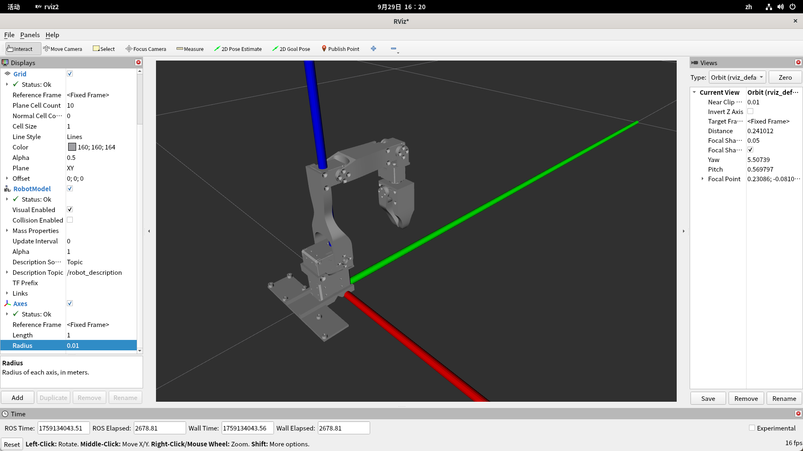

roboarm 项目文档
Piper 机械臂 + LinkerHand O6 灵巧手的抓取工程（平掌包络抓取 / 2D 手眼标定 / YOLO 目标检测）。
3D 交互式模型查看器 →
three.js + URDFLoader 静态查看器：整机 URDF（6 臂关节 + 11 手关节）、 关节滑条、平抓/握拳预设、相机预设。纯前端、不连接硬件。
项目说明（README）→
安装、配置与各场景脚本用法。
